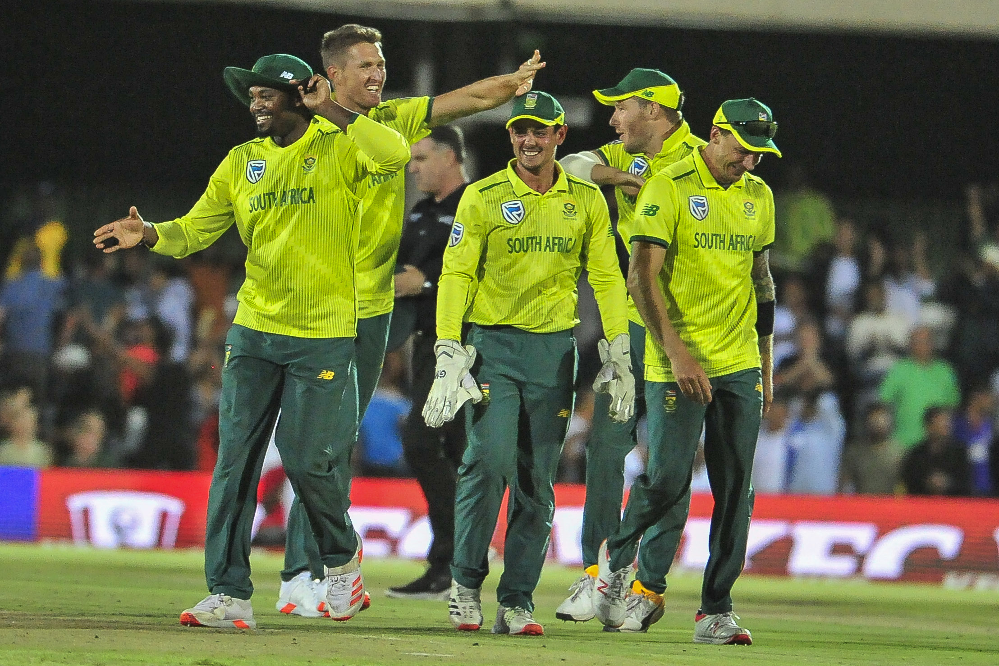
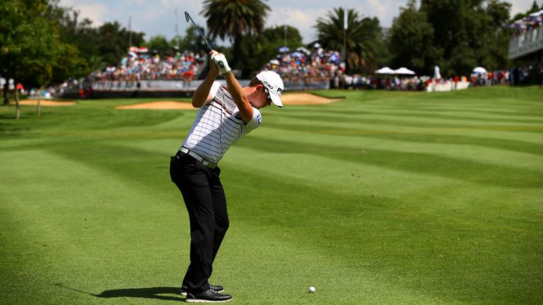
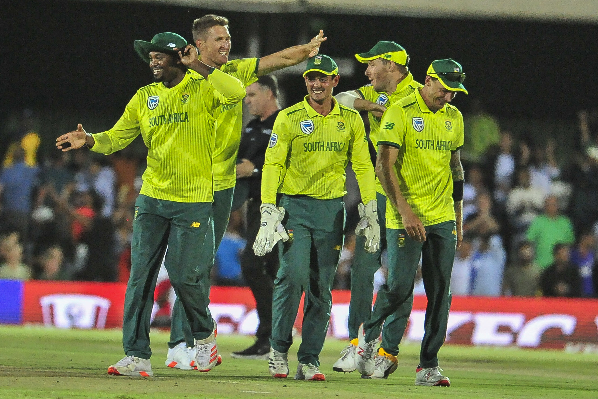
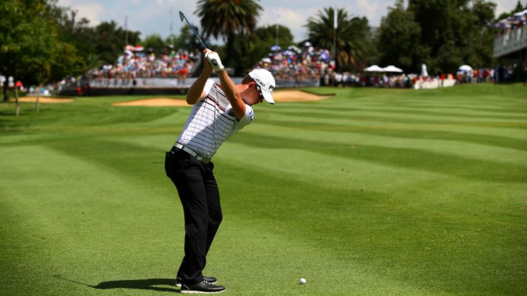
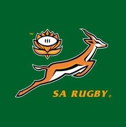
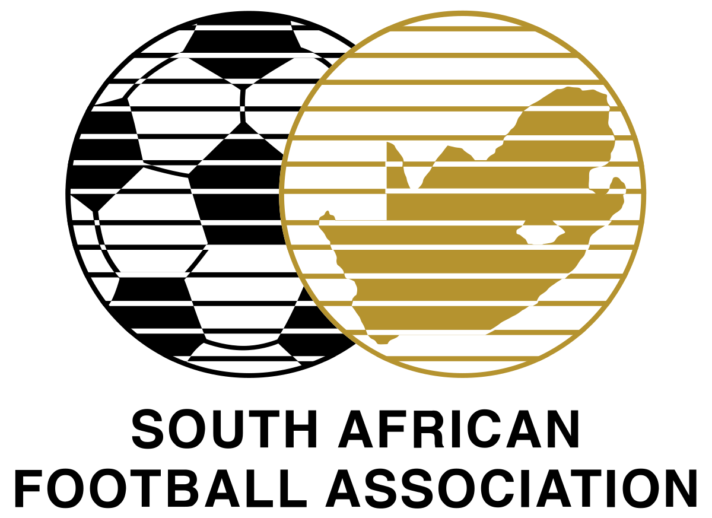
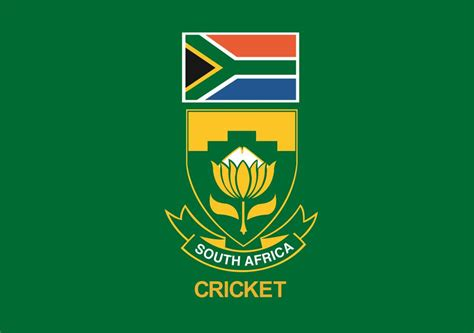

Sports South Africa
All these people, from various cultural backgrounds, often only come together for one reason, their love of sports. Where it gets tricky is what sport they love. Statistically, the most popular sports in South Africa are cricket, rugby and soccer. Other sports which enjoy a particularly good amount of following includes athletics, basketball, boxing, golf, netball, swimming, and tennis.
Rugby
Follow @ProteasThe South Africa national rugby union team who are recent world cup winners, commonly known as the Springboks is the country's national team governed by the South African Rugby Union. The Springboks play in green and gold jerseys with white shorts, and their emblem is the native antelope springbok.
Soccer
Follow @BafanaBafanaThe South Africa national football team represents South Africa in men's international association football and it's governed by the South African Football Association, the governing body for football in South Africa, The team's nickname is Bafana Bafana, South Africa's home ground is FNB Stadium, so named due to a naming rights deal in Johannesburg, The team's greatest result was winning the Africa Cup of Nations at home in 1996. The team represents both FIFA and Confederation of African Football (CAF).
Cricket
Follow @OfficialCSAThe South Africa national cricket team also known as Proteas represents South Africa in men's international cricket, is administered by Cricket South Africa. South Africa is a full member of the International Cricket Council with Test, One-Day International and Twenty20 International status
